Project Assignment 2
Administrative details
Our client is a student club called SpiseKlubben, It consist mainly of students at industrial design.
Purpose, goals and audience
The website will give users a site to find food recepies, tips and tricks as well as giving the possibility to arrange and sign up for the weekly dinners. We want the site to give students a community to be part of where they can share the joys of eating food together%
Navigation Structure
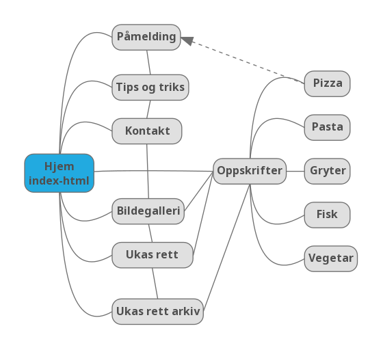{kind=link}
The website is structured in a mix between linear- and augmented linear structure. With that said, the overall form is hierarchical. Each page contains links back to the landing page and subpages via the navigational bar.
“Hjem” is the landing page. A welcome page with short information about the dinner club concept. From here you can navigate to all the other subpages – “Påmelding”, “Tips og triks”, “Kontakt”, “Oppskrifter”, “Bildegalleri”, “Ukas rett”, “Ukas rett arkiv”.
The pages just mentioned is linked to each other via the navigation menu at the top of the website. “Bildegalleri”, “Ukas rett” and “Ukas rett arkiv” will also link directly to “Oppskrifter”.
“Oppskrifter“ will contain recipes listed in sub categories. In each subcategory there will be links to recipes as indicated in the diagram. Subpages of “Oppskrifter” will link back to every page because of the navigation menu on all pages. This is indicated by the dotted line on the pizza-subpage, with an arrow towards “Påmelding”. This to indicate it goes only one way. Also, this dotted line represents all the subpages of “Oppskrifter”. Drawing all the lines from every subpage made the diagram impossible to read.
An example flow of the page would be a person landing on “hjem” then goes to “Bildegalleri” to look at food pictures, then deciding that he wants to attend a dinner event and clicks “påmelding” and signs up for an event.
The image was made using the online app Mindmup. The functionality was limited. Please regard each line as a two-way connection, linking back and forth. Also, we would like to structure it with the “index.html” at the top to more clearly show the hierarchical structure, but that resulted in lines crossing and making the visual information harder to understand.
Page layout and Apperance
A description of design decisions that are universal to your site
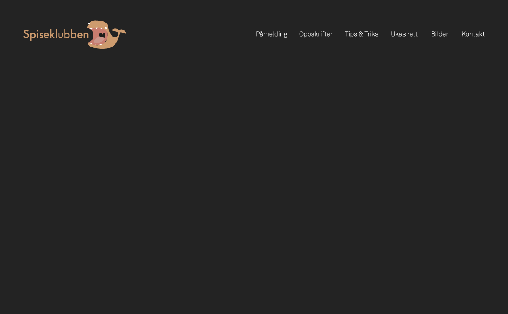This is our mockup of the universal design of the website
- font-type: akkurat light for content and Fortuna for the logo
- font-size: navigation bar is 14pt and the logo font is 25 pt going to 21 pt when scrolling down
- Colour scheme:
- logo: #c39c70
- background: #282828
- Text, Content: offwhite (#f0f0f0)
- links looks like the other text around them, but will hav a hover effect that will underline them and make them the same colour as the logo (#c39c70). When selected it will turn #BB7C71 (the color of the wales mouth)
- menu bar: will have the same color as the background
- Body-width: min 500px, max 1200px
- Menu bar
- Position: top right half of screen. when opening a page, the menu bar is a little lower, and follows the page up to the top of the screen when scrolling down.
- size: when openeng a page, the menu banner will have a height of 160px, when starting to scroll down, the height will change to 92px.
- it vill have a hover-funktion, that vil change the colour of the font to #c39c70
- the hover funktion will furthermore show a line under the hovered link, and if clikked the line will stay under the chosen link to remind the user where on the website he/she is at the moment.
- Footer: mailadresse, social media widges
- Favicon: here we made the whale logo into 16x16px ico file. the logo disapares a little bit when it gets so small, but it works and we will stick with it for now.
- Logo
- position: upper left, follows the menu bar
- its a interactive link that takes the user to the main frontpage when clikked
- the logo will consist of wale and the text "Spiseklubben". The wale is a symbol of a beautiful creature thet can consume a lot of food and doesn't give a fuck, wich are some values we all can appreciate
Content
This is the longest section, for every page you will need to give a text description of the content of the page as well as an image of the mockup of the page
Front page
The front page will be the first you see when you visit Spiseklubbens homepage. In the top there will be a big pictureframe with a slideshow of delicious food pictures. Below that a warm welcomming text that will inform you about Spiseklubben in general. Further down more teasing pictures with a little teasing text about all the topics in the navigation bar. As shown on figure XXX the text will contain a link to the refeered page, and the connected picture will work as a link as well. The function "Er der middag idag?" will be shown on the frontpage right below the welcoming text. This will work as a link directly to sign up for the dinner, if any.
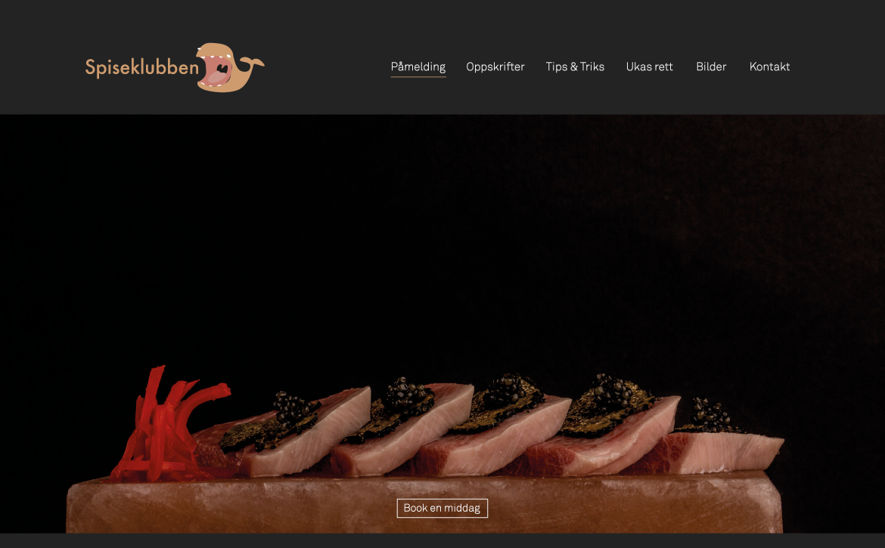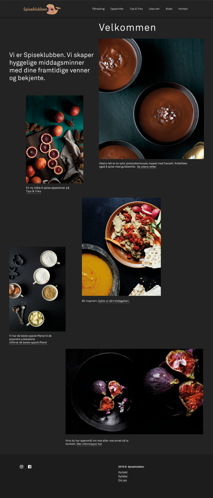
Påmelding
Simply a page with two buttons/whales. If you wanna host a dinner, you click the host-whale, and there will appear a form for typing your name, email, the dish that will be made, where it's all gonna happen, what time, and how many hungry whales you can host. When clicking the join-whale, you will get the list of upcomming dinners, where you can click the one you want to join and submit with your name and email.

Oppskrifter
This page will show a grid of delicious pictures of dishes. Every dish/picture will have a headline underneath it, and under the headline there will be a little declaration of what category the dish is. When clicking the picture or the headline you'll go to the page with the recipe. If you are clicking the category, the "oppskrifter"-page will show only recipes in that category.
The pictures shown on the main "oppskrifter"-page will be stored as tumbnails in the size of 236x366px, to reduce loading time of the page. Full size image will be shown on the seperate recipe-page.
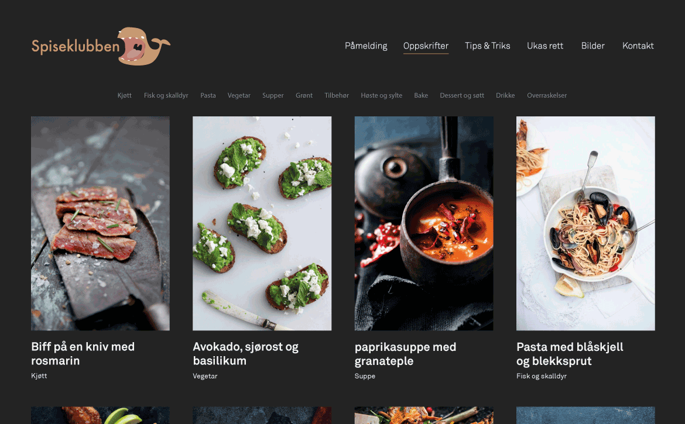When a recipe is clicked the page will look like this:
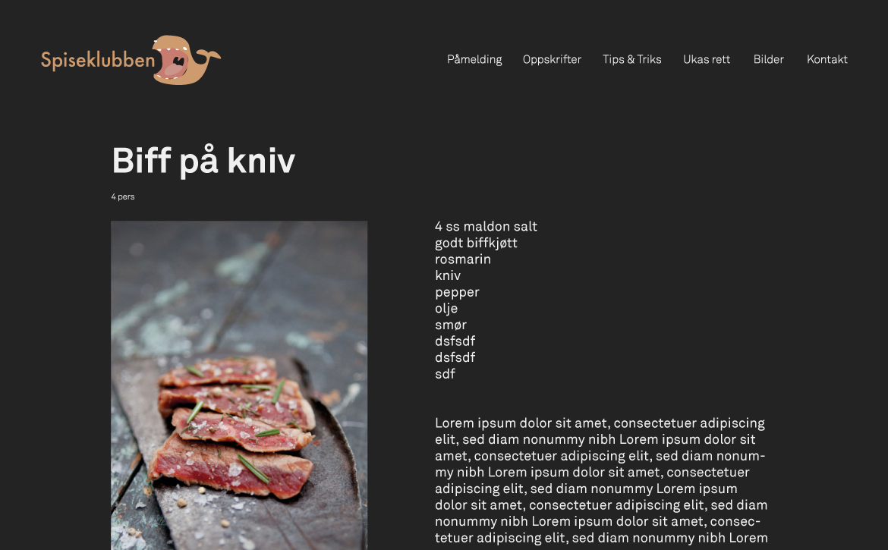Tips & triks
This page will show pictures and headlines for small tricks that can make your life in the kitchen (and in general) easier. Every picture and matching headline will link to an article about the topic.
The shown pictures on the overview are stored as tumbnails to reduce loading time. Each tumbnail is 236x236px.The full size picture is shown when entering the specific article.
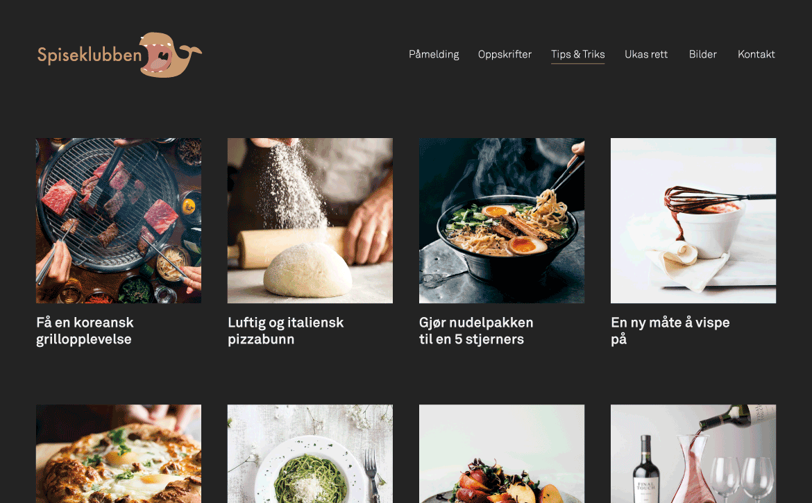When a specific tip (or trick) is clicked, the article is shown as below:
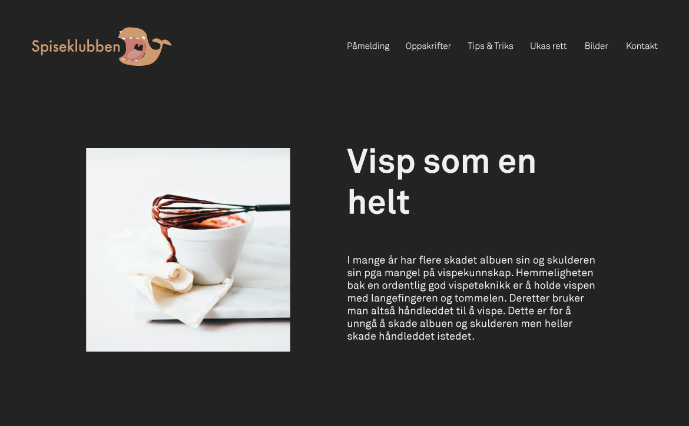Ukas rett
This page is one recipe. The recipe of the week will change every week, and it's a random recipe from the index of recipes (chosen by a JavaScript-function)
The layout is: a brief prolouge/description of the dish in upper left corner. Underneath that a list of what you need, and under that a how-to description. in the upper right corner: the name of the dish, right under that you'll se how many whales you can satisfy with the mentioned amount, and then a nice picture of how the dish could look if you where a skilled master chef in a rustic italian kitchen.
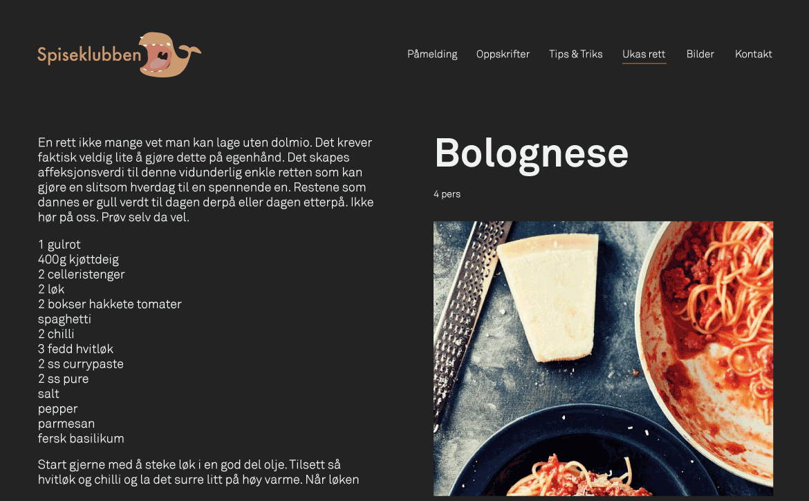Bilder
This page is to show nice pictures of food and dinners/get togethers in Spiseklubben. Pretty mutch the same content as if Spiseklubben had its own instagram-profile.
The pictures are shown in colunms with the same width but different length, in order to give an other look than "tips & triks" and "oppskrifter". All the shown pictures are stored as tumbnails in order to reduce loading time. The tumbnails are of size 236xsomething px. When a picture is clicked it will load and show the big picture in full-screeen, with the ability to go directly to the next or previous picture without going back to the overview.
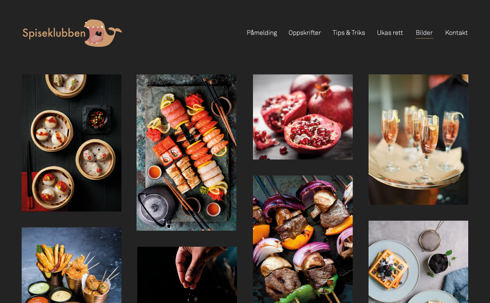Kontakt
This page is telling you that Spiseklubben is only an email away, and that you shouldn't hesitate to contact us. Nothing fancy. Just an email-adress that will take you to your favourite email-program if clicked.
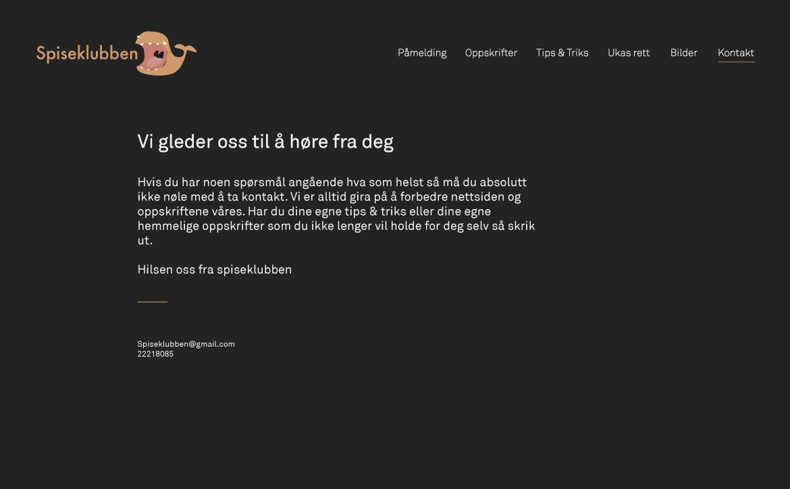Minimum Requirements
the website must include four distinct javascript applications
-
Pictures the front page
There will be a slideshow showing pictures that changes every 10 seconds at the front page. (the first picture on figure 1 under "Content")
-
Form-validation for "Påmelding"
When you want to host a dinner you should be able to write your name, email, what's on the menu, where the dinner is, what time it is, and how many you are able to host.
If you want to sign up for a dinner, you should be able to write your name and email.
-
"Er det middag idag?"
On the frontpage there will be at spot where you can se if there is someone hosting a dinner. If not, it will show how many days untill next dinner. There will be a direct link to sign up for the dinner.
-
Pictures at the gallery
When selecting a picture in the gallery, it will be shown as a bigger picture, with the ability to go to the next or the previous picture directly in the "picture window". We think that the ability to go through the enlarged pictures, without going back to the main gallery every time you want to se a new picture is making it a better experience
Plan
Under følger en oversikt over hvordan vi har tenkt å strukturere innholdet på nettsiden. Vi har og laget en tabell hvor vi har listet opp det vi til nå har av oppgaver for å få nettsiden ferdig. Endringer utover denne planen vil bli dokumentert i P3_changes.
Organisering
Dette er den foreløpige strukturen vi ser for oss nettsiden vil ha. Vi har listet den opp ved bruk av en usortert liste, hvor underpunkter blir å anse som undermapper.
- Index.html/hjem
- Påmelding.html
- Tips og Triks.html
- Kontakter.html
- Oppskrifter.html
- Pizza.html
- Pasta.html
- Gryter.html
- Fisk.html
- Vegetar.html
- Bildegalleri.html
- Ukas rett.html
- Ukas rett arkiv.html
- CSS/
- Main.css
- Gallery.css
- Scripts/
- Gallery_slideshow.js
- Host_dinner.js
- Signup_dinner.js
- animation.js
- Images/
- Dinner images(5-10)
- Logo
- Background image
- Navbar background image/banner
- Modularity
- Menu
- JS scripts
Modularity
For å oppnå en modulæritet skal vi ha felles CSS for nettsiden. Det er listet opp en egen CSS-fil for galleri i oversikten over. Dette fordi det mest sannsynlig innebærer en del arbeid, men ved bruk av ID og CLASS så kan vi bygge det inn i main.css.
Det samme gjelder JavaScript på funksjoner som vi ser går igjen. Der vil vi samle koden slik at vi ikke skriver den samme koden flere ganger.
Ansvarsområder og tidsfrister
| File Name | File description | Deadline | Assigned Person |
| index.html | homepage/landing page | 27 okt | Håvard |
| Påmelding.html | Sign up for events | 27 okt | Jens Kristian |
| Tips og triks.html | cooking tips | 27 okt | Håvard |
| Kontaker | email and contact info | 27 okt | Håvard |
| Oppskrifter.html | samling oppskrifter | 27 okt | Rune |
| Pizza.html | pizza oppskrifter | 27 okt | alle |
| Pasta.html | pasta oppskrifter | 27 okt | alle |
| Gryter.html | gryteoppskrifter | 27 okt | alle |
| Fisk.html | fiskemiddag | 27 okt | alle |
| Vegatar.html | Vegetaroppskrifter | 27 okt | alle |
| Bildegalleri.html | Bilder av tidligere middager | 27 okt | Rune |
| Ukas rett.html | Ukas rett med bilde | 27 okt | Rune |
| Ukas rett arkiv.html | Tidligere middager | 27 okt | Arvin |
| main.css | main css used | 3 nov | alle |
| gallery.html | css optimized for imgages | 3 nov | alle |
| gallery_slideshow.js | load 3 random images on page load | 3 nov | Jens Kristian |
| host_dinner.js | check if valid form input | 3 nov | Jens Kristian |
| signup_dinner.js | check if valid form input | 3 nov | Jens Kristian |
| animation.js | animate logo and slideshow | 3 nov | Arvin |
| Dinner images | images of dinners served | 3 nov | Håvard |
| Logo | website logo | done | Arvin |
| Background image | 27 okt | Rune | |
| Navbar background | Banner | 27 okt | Håvard |
| Modularity | Unngå copy/paste løsninger | 3 nov | alle |